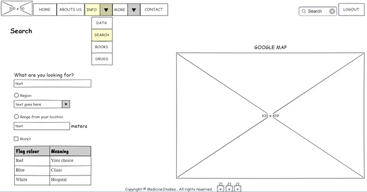
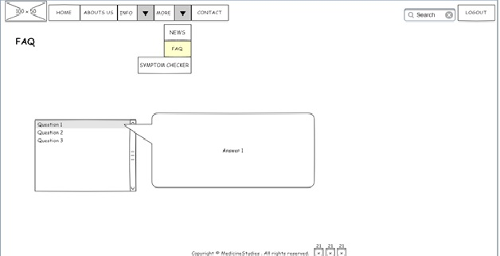

The main objective of our webpage is to provide accurate and useful information to middle, high school and university students about specific medical conditions, the threats and how to take care of the human body.
We encourage the students to reach on our website because they will find a lot of good information about medical situation in different part of world.
This website is free for every student from business point of view. For others the navigation on website is note free. We are thinking to create a price list from where each user can select a specific option.
“MedicineStudies” is the name of website that reflects the scope. The name is combined by two words: “medicine” and “studies”. The word “medicine” is mean “the science and art of diagnosing and treating disease or injury and maintaining health” – according to The American Heritage® Dictionary of the English Language, 5th Edition. The word “studies” is linked to combine the science and every student around the world which wants to learn more about diseases.
The logo is made by name of website and sketch, where is combined a test tube and a clipboard where the students can write notes. The logo is reflecting like the name, it has the same objective to make everybody to think about studies for students from medical universities.
The background of site will have a combination of white color and dark grey: gray has undoubtedly been the hottest neutral and is definitive style statement in the world design. The color white affects the mind and body by aiding in mental clarity, promoting feelings of fresh beginnings.
The color of paragraphs it will be black because this color is more evident on white background. The titles and important text will have orange color like logo.
The landing homepage will be composed by a login/signup form that would confirm us the user is indeed a student.
The email address and password combination inserted by the user will be confronted with the registered students from the database and will be provided access if matched. If the email is registered but the combination will not be the right one, the “Wrong username/password!” message will pop-up.
There will be also some username and password restrictions like username should have the following format abc123@xyz.abc and the password to have at least one capital letter and symbol. If the user isn’t registered, he will have to follow the sign-up form in order to access the website.
After the user gains access the main page will be displayed. On the upper part of the page we will place the main navigation menu where the user could follow the category of information he is interested in, together with our logo and a logout button.
At the bottom of every page the user can see 3 images for social media (Facebook, Instagram, Twitter). Every user can share information among others students and they can reach to more information that we are posting on social media.
The Home page view is based on structuring the most relevant information like: “Finding information around the world”, “Books covering specific medical domains” and “Latest news about medicine coming from professionals and trusted sources”.
The user can see images that is reflected to the specific link which is redirected to a specific page from the website.
This will be a gliding structure with arrows that would help us navigate between the options.

On the homepage the user will have the option to navigate easily to the most relevant pages. He can use either the buttons from the top of the page or the glider from the body of the page. Additionally, the user can land on the wanted page by using the search bar.
The “About us” page will cover all the goals, mission and values together with the ideas behind creating the webpage and a short presentation of people in charge of the content and their vision.
Each team member will be represented with a picture and a resume covering the main achievements and activities of everyone. The user can click on each member picture and a popup with details will be displayed.

The “Info” drop-down menu reveals four pages: “Data”, “Search”, “Books” and “Drugs”.
Data page will display a form where the user can simply filter the data on preference. The single constraint applied in the form is that the user must select one Medical condition. If the Continent, Country and City will be left blank, the report will generate information on a worldwide level.
Medical condition drop box will cover general data for example: common diseases, allergies, food intolerances, obesity factors etc.
The continent -> country -> city will work like a cascade meaning that if the user selects a city/country it will automatically fill the correspondent country/continent. There is also the possibility to choose the view on a continent / country level, leaving the fields on the level below empty.

The “generate” button action will trigger two table views and a chart that will feed with the data filtered by the user and will display some general statistics about the chosen medical condition.

After the data are generated the user can scroll down to see graphics made based on the data which was generated previous. These graphics and tables are generated according to completed fields from the begging of Data page.
For this page we use a Disease city.This file is containing info about the big cities from America based on some diseases. From this csv the data frame and graphics can be generated.
The Search page will offer the same action as the search bar, but as a plus there will be additional options for a detailed search.
The red flags on the map will be the most fit result for the search, but the user has also the option to check the “More?” checkbox to get similar Clinics or Hospitals that can help, but are on a longer distance relative to the point where the search is made.
The map located in the right part of the page will refresh based on the user choices, pointing out Clinics, Public/Private Hospitals and so on, together with the distance of the nearest point that can help with the related search topic. The search subject will be inserted in the text box and the region will be selected from the combo-box. For an alternative to the search the “More?” checkbox will be checked.
This page is based on Google Map API for searching hospital, clinics, libraries with medicine books and others. The user can check the on of the radio boxes and he can choose to find a specific thing on “Region” or a distance from him, based on device location.
The Books page will offer the opportunity to search for a medical book and get details on where you can find the book, date of publication, names of authors and others.
The list of books will filter automatically when the user types in the title wanted and will have the options to sort the results by date or name. For a more detailed look the user can double click on a title and the table will be completed with info about selected book.
The external source of data for this page is Books API from Google. That API is available in a number of popular programming languages (Java, Python, PHP and others). We can search for books with this API and the table with details will be fully with information generated from API. Google API Client Libraries
On the Info -> Drugs page the user will be able to search for a specific medicine and check information like side effects, dosage and main purpose of the drug. For the search the user will have multiple options. Either he can use the search box or can browse the main classes of medicines and the most searched drugs from the list.
Information about medication will be synthetized on Drugs page. Here will be displayed in the left part of the page the most common searches made by the users. If clicked, the images will display a detailed view of the drug, purpose, dosage, side effects and specific information if any.
In the right view, it will be displayed the most common classes of drugs, grouped by common purposes. Once clicked, each class will display a list with the drugs. The center of the page will be covered by the search text bar and button. Here the user can manually input the name of the drug to search it in.
Double click on a drug image, the user will be redirected to another page where he can see just information about that drug (name, administration, active ingredients, strength).
The external source of data for this page is the file: Products.
The file “Products.txt” contains information about drugs with the fields from Figure 8. For more pharmaceutical products can be used an API. It allows you to access DrugBank API endpoints to get information on drugs, drug products, and drug interactions. More information about this API : HERE
The “More” drop-down menu reveals three pages: “Symptom Checker”, “FAQ”, and “News”.
The News page will list articles from popular websites or magazines related to medicine topics.
The user can search for specific news using the text box and he is able to sort by date (ascendant and descendent). If the user wants to read an article he needs to navigate on another website to read that article using the link.

For this page it will be used web scrapping with HtmlUnit where we cannot find API on the website from where we gather the latest news. For web scrapping is necessary basic knowledge about XPath (query language to select XML nodes). For more information: HERE
The FAQ page will try to make it easier for the new users to understand and cope with potential technical/informational difficulties and common misunderstandings.
F.A.Q. page has the purpose the help the user with the most common questions about general medical topics and functionality of the website. The questions will be listed in a table and once the user clicks on one of them, the answer will be shown on the right of the page.
The Symptom Checker page, is a web tool made with the use of an API in order to provide a diagnostic based on what information the user provides by answering some specific questions for example: the age, gender, the area of pain (if any), how is the pain reaching etc. in order to return a most likely disease/ affection that might occur. More information about this API : HERE

The Contact page will make available for the user to message the page administrator regarding any issue. Contact page offers details on physical address, email and phone number and provides the option for the user to give a suggestion for improvement of the service.
The user will select a reason for the message by clicking on the combo-box and will type the message on details text box. Auxiliary contact information will be displayed on the right of the page.
As for the future plans, we will try to add new functionalities to our current platform and to keep all the data as accurate as possible, as well as updating all the current functionalities to get a better result in performance and to deliver the data in the best manner possible and in the meantime to improve the overall appearance and user-friendliness.
The continuous development of the website is due to constant improvement in the whole medicine and research industry, together with the IT industry continuous growth.
The continuous development of the website is due to constant improvement in the whole medicine and research industry, together with the IT industry continuous growth.